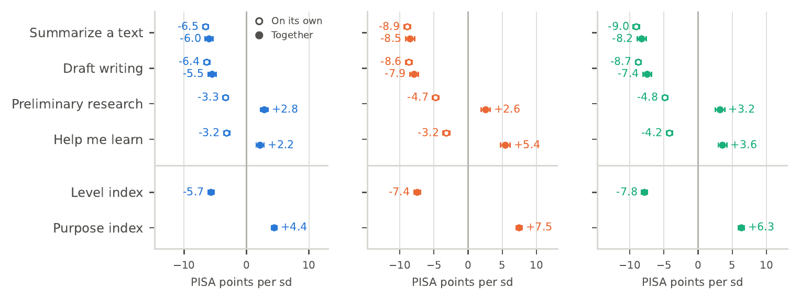
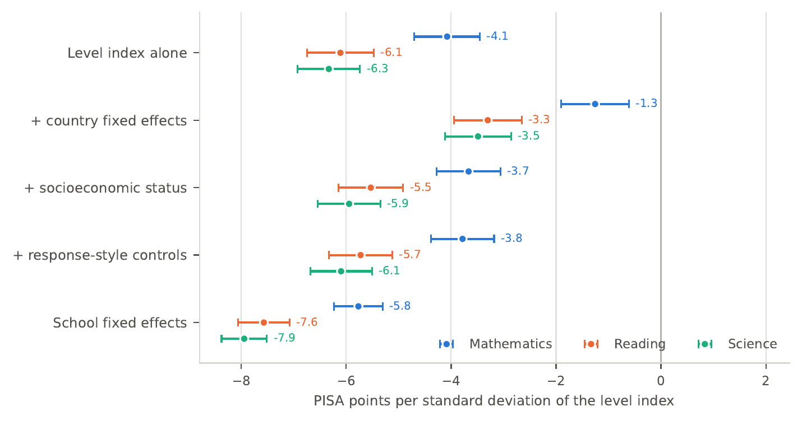
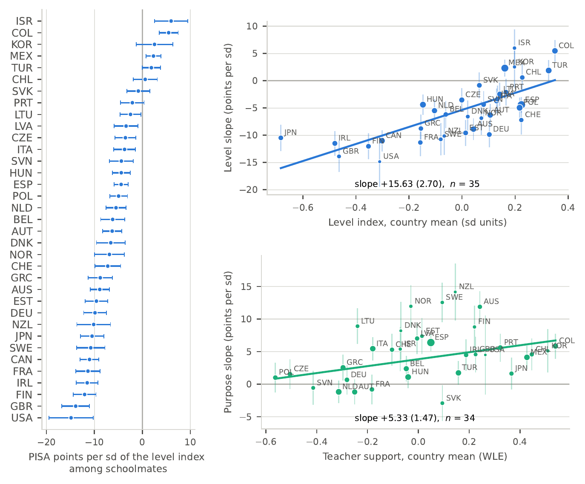

Generative AI Use and Student Achievement: Evidence from PISA 2025
Ignacio Lepe & Dante Contreras · Working paper, 2026 · Revise and resubmit at Economics of Education Review (Short Communication)
Abstract
PISA 2025 is the first cycle of the assessment to ask 15-year-olds how they use AI chatbots for schoolwork, where 54.2 percent of students in OECD countries report at least weekly use. Comparing schoolmates with similar backgrounds, we find that more AI use is associated with lower achievement. Among students with the same level of use, those who use it more for research and learning score higher than those who use it more for summarizing and drafting. The data are a single cross-section of self-reports, so these associations cannot show whether AI helps or harms learning.
Insights

What students use AI for matters as much as how much they use it. Taken one at a time (hollow markers), every purpose goes with lower scores among schoolmates: 6 to 9 points per standard deviation for summarizing and drafting, and 3 to 5 for research and learning. Entered together (filled markers), the four questions compare purposes among students with the same level of use, and those who use AI more for research and learning score higher than those who use it more for summarizing and drafting. One standard deviation of the purpose index goes with 4.4 more points in mathematics, 7.5 in reading, and 6.3 in science. This is a comparison between purposes, not evidence that any use of AI raises scores.

Students who use AI more score lower, and the gap is largest among schoolmates. Each marker is the difference in PISA points between two students one standard deviation apart on the level index of AI use (mathematics in blue, reading in orange, science in green), as controls are added one at a time. Adding socioeconomic status makes the association more negative, because students from better-off families report more AI use and also score higher. Comparing schoolmates, the last row, the gap is 5.8 points in mathematics, 7.6 in reading, and 7.9 in science, roughly a quarter to a third of a grade of schooling.

The associations differ widely across countries. Panel (a) ranks each country’s level slope among schoolmates in mathematics, from −14.9 points per standard deviation in the United States and −13.9 in the United Kingdom to +6.0 in Israel. Panel (b) shows that the level slope is less negative where AI use is more common. Panel (c) shows that the advantage of research and learning over summarizing and drafting is larger where students report more support from their teachers. These are correlations across 34 or 35 countries and are descriptive: countries that differ in these characteristics also differ in many other ways.
Citation
Lepe, I., & Contreras, D. (2026). Generative AI use and student achievement: Evidence from PISA 2025 [Working paper]. SSRN. https://ssrn.com/abstract=7752238
@techreport{lepe2026generative,
author = {Lepe, Ignacio and Contreras, Dante},
title = {Generative AI Use and Student Achievement: Evidence from PISA 2025},
year = {2026},
type = {Working paper},
note = {SSRN 7752238}
}